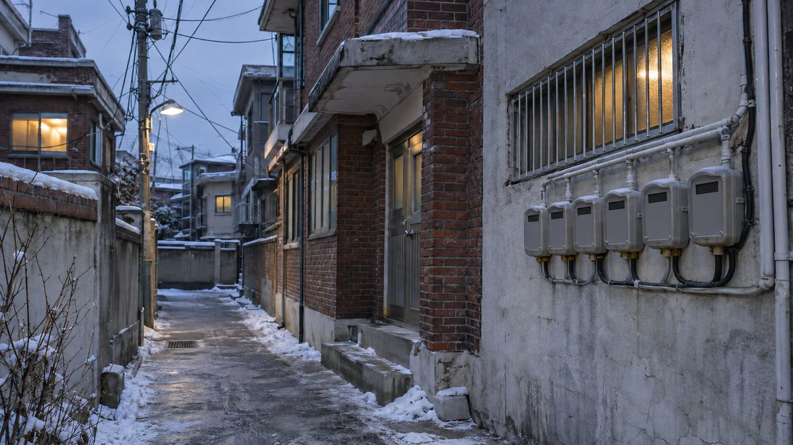

국회서 에너지 기본권 토론회…요금 지원 넘어 최소 보장기준·참여권·편익공유권 법제화 제안

서왕진 의원 주최, 고재경 환경정의 공동대표는 에너지전환 참여권·정보권·편익공유권, 김재경 에너지경제연구원 선임연구위원은 기본에너지·공급중단 방지의 에너지법 명시 제안
요금 감면과 에너지바우처 같은 비용 지원만으로는 에너지복지의 사각지대를 메우기 어렵다며, 최소한의 에너지 이용을 국가가 보장하는 '에너지 기본권'을 법에 담자는 제안이 5일 국회에서 나왔다. 조국혁신당 서왕진 의원(비례대표, 국회 기후에너지환경노동위원회)은 이날 국회의원회관에서 '일상을 지키기 위한 최소한의 에너지, 에너지 기본권 강화 방안 마련 국회토론회'를 열었다. 발제를 맡은 고재경 환경정의 공동대표는 에너지 기본권을 필수 에너지서비스에 접근할 권리에서 에너지전환 과정에 참여하고 정보를 얻고 편익을 나눌 권리로 넓히고, 소득·주거·건강·지역 여건을 반영한 에너지 취약성 기준과 통합 지원체계를 마련하자고 제안했다. 김재경 에너지경제연구원 선임연구위원은 '기본에너지' 개념과 필수 에너지서비스의 최소 보장기준, 국가의 보장 의무, 취약계층 공급중단 방지 조치를 에너지법에 명시해야 한다고 밝혔다. 서 의원은 지난 8월 18일 에너지빈곤의 정의와 최소 에너지 공급기준 마련 의무를 담은 에너지법 개정안을 대표발의했으며, 이날 "에너지복지를 단순한 시혜적 지원에서 보편적 권리로 전환하고 국가의 보장 책임을 명확히 해야 한다"고 말했다. 토론회에서 기후에너지환경부 양동춘 사무관은 가구마다 필요한 에너지 종류와 사용 수준이 달라 일률적인 최소 보장기준을 정하기는 현실적으로 어렵다며, 에너지빈곤의 법적 정의와 보장체계 마련에는 동의하지만 전국 약 2만 가구를 대상으로 한 에너지복지실태조사 결과 등을 검토하고 사회적 합의를 거쳐 단계적으로 추진해야 한다는 입장을 밝혔다. 지정토론에 나선 녹색에너지전략연구소 윤성권 연구원은 화석연료 구입비 지원만으로는 노후주택의 난방비 부담을 풀기 어렵다며 베란다·지붕 태양광과 히트펌프 보급을 늘려 취약계층의 에너지 소비구조를 바꾸자고 제안했다.
시민에너지 관점
유럽연합은 2018년 개정한 재생에너지 지침에서 시민과 지역 주민이 재생에너지 공동체를 꾸려 전기를 직접 생산하고 쓰고 팔 권리를 회원국이 보장하도록 했다. 에너지 기본권은 요금 부담을 덜어 주는 복지의 문제인데 발전소 소유까지 끌어들이는 것은 지나치다는 반론이 나올 수 있지만, 취약계층이 지원을 받는 대상에 머무는 한 전기요금이 오를 때마다 지원 예산도 함께 불어날 수밖에 없다. 편익공유권과 참여권을 법에 넣어 취약계층과 주민이 지역 발전소의 출자자가 되게 하면, 발전 수익이 요금 부담을 덜어 주는 오래가는 재원이 된다. 국회는 에너지법 개정안을 심사하면서 최소 보장기준과 함께 시민과 취약계층이 재생에너지에 참여하고 편익을 나눌 권리를 조문으로 담아야 한다.
출처: 전남일보 2026-11-05 길용현 원문 보기
출처: 에너지데일리 2026-11-05 변국영 원문 보기
国会でエネルギー基本権討論会…料金支援を超え最低保障基準・参加権・便益共有権の法制化を提案
ソ・ワンジン議員が主催、環境正義のコ・ジェギョン共同代表はエネルギー転換への参加権・情報権・便益共有権を、エネルギー経済研究院のキム・ジェギョン先任研究委員は基本エネルギーと供給停止防止のエネルギー法明記を提案
料金減免やエネルギーバウチャーのような費用支援だけではエネルギー福祉の死角を埋めるのは難しいとして、最低限のエネルギー利用を国が保障する「エネルギー基本権」を法に盛り込もうという提案が5日、国会で出された。祖国革新党のソ・ワンジン議員（比例代表、国会気候エネルギー環境労働委員会）はこの日、国会議員会館で「日常を守るための最低限のエネルギー、エネルギー基本権強化策づくりのための国会討論会」を開いた。発題した環境正義のコ・ジェギョン共同代表は、エネルギー基本権を必須エネルギーサービスにアクセスする権利から、エネルギー転換の過程に参加し、情報を得て、便益を分かち合う権利へと広げ、所得・住居・健康・地域の条件を反映したエネルギー脆弱性の基準と統合支援体制を整えるべきだと提案した。エネルギー経済研究院のキム・ジェギョン先任研究委員は、「基本エネルギー」の概念と必須エネルギーサービスの最低保障基準、国の保障義務、脆弱層への供給停止を防ぐ措置をエネルギー法に明記すべきだとした。ソ議員は8月18日、エネルギー貧困の定義と最低エネルギー供給基準の策定義務を盛り込んだエネルギー法改正案を代表発議しており、この日「エネルギー福祉を単なる恩恵的な支援から普遍的な権利へと転換し、国の保障責任を明確にすべきだ」と述べた。討論会で気候エネルギー環境部のヤン・ドンチュン事務官は、世帯ごとに必要なエネルギーの種類と使用水準が異なるため一律の最低保障基準を定めるのは現実的に難しいとし、エネルギー貧困の法的定義と保障体制づくりには同意するものの、全国約2万世帯を対象とするエネルギー福祉実態調査の結果などを検討し、社会的合意を経て段階的に進めるべきだとの立場を示した。指定討論に立った緑色エネルギー戦略研究所のユン・ソングォン研究員は、化石燃料の購入費支援だけでは老朽住宅の暖房費負担は解決しにくいとして、ベランダ・屋根の太陽光とヒートポンプの普及を広げ、脆弱層のエネルギー消費構造を変えるべきだと提案した。
市民エネルギーの視点
欧州連合（EU）は2018年に改正した再生可能エネルギー指令で、市民や地域住民が再生可能エネルギー・コミュニティをつくり、電気を自ら生産し、使い、売る権利を加盟国が保障するよう定めた。エネルギー基本権は料金負担を和らげる福祉の問題であり、発電所の所有まで持ち込むのは行き過ぎだとの反論もありうるが、脆弱層が支援を受ける対象にとどまる限り、電気料金が上がるたびに支援予算も膨らまざるを得ない。便益共有権と参加権を法に盛り込み、脆弱層と住民が地域の発電所の出資者になれるようにすれば、発電収益が料金負担を和らげる長続きする財源になる。国会はエネルギー法改正案の審査で、最低保障基準とともに、市民と脆弱層が再生可能エネルギーに参加し便益を分かち合う権利を条文に盛り込むべきだ。
出典: 全南日報 2026-11-05 キル・ヨンヒョン 原文を読む
出典: エネルギーデイリー 2026-11-05 ピョン・グギョン 原文を読む
国会举行能源基本权讨论会…提议超越电费补贴，将最低保障标准、参与权和利益共享权写入法律
议员Seo Wang-jin主办，环境正义共同代表Ko Jae-kyung提出能源转型参与权、知情权和利益共享权，能源经济研究院高级研究委员Kim Jae-kyung建议在能源法中写明基本能源和防止断供
5日在国会有人提出，仅靠电费减免和能源券之类的费用补贴难以填补能源福利的盲区，应把由国家保障最低限度能源使用的"能源基本权"写入法律。祖国革新党议员Seo Wang-jin（比例代表，国会气候能源环境劳动委员会）当天在国会议员会馆举行了"守护日常的最低限度能源——能源基本权强化方案国会讨论会"。作主题发言的环境正义共同代表Ko Jae-kyung提议，把能源基本权从获得必要能源服务的权利，扩展到参与能源转型过程、获取信息和分享利益的权利，并建立反映收入、住房、健康和地区条件的能源脆弱性标准和综合支援体系。能源经济研究院高级研究委员Kim Jae-kyung表示，应在能源法中写明"基本能源"概念、必要能源服务的最低保障标准、国家的保障义务以及防止对弱势群体断供的措施。Seo Wang-jin议员已于8月18日牵头提出能源法修正案，内容包括能源贫困的定义和制定最低能源供应标准的义务，他当天表示："应把能源福利从单纯的施惠性支援转变为普遍权利，并明确国家的保障责任。"在讨论会上，气候能源环境部事务官Yang Dong-chun表示，每户家庭所需的能源种类和使用水平不同，现实中难以设定统一的最低保障标准；政府虽同意建立能源贫困的法律定义和保障体系，但认为应先研究以全国约2万户为对象的能源福利实况调查结果等，经过社会共识后分阶段推进。在指定讨论中，绿色能源战略研究所研究员Yoon Seong-kwon表示，仅靠补贴化石燃料购买费用难以解决老旧住房的取暖费负担，建议扩大阳台和屋顶太阳能以及热泵的普及，改变弱势群体的能源消费结构。
市民能源视角
欧盟在2018年修订的可再生能源指令中，要求成员国保障市民和当地居民组建可再生能源社区、自行生产、使用和出售电力的权利。有人可能反驳说，能源基本权是减轻电费负担的福利问题，把电站所有权也扯进来未免过头，但只要弱势群体始终停留在接受补贴的位置，电费每上涨一次，补贴预算也只能跟着膨胀。把利益共享权和参与权写入法律，让弱势群体和居民成为本地电站的出资人，发电收益就能成为减轻电费负担的长期财源。国会在审议能源法修正案时，应在最低保障标准之外，把市民和弱势群体参与可再生能源、分享其利益的权利写进条文。
来源: 全南日报 2026-11-05 Gil Yong-hyeon 查看原文
来源: 能源日报（Energy Daily） 2026-11-05 Byun Guk-young 查看原文
National Assembly forum on energy rights proposes writing minimum guarantees, participation and benefit-sharing rights into law, beyond bill subsidies
Hosted by lawmaker Seo Wang-jin; Ko Jae-kyung of Environmental Justice proposed rights to participate in, be informed about and share the benefits of the energy transition, and Kim Jae-kyung of the Korea Energy Economics Institute called for basic energy and protection from disconnection to be set out in the Energy Act
Speakers at the National Assembly on Nov. 5 proposed writing into law a "basic right to energy," under which the state guarantees a minimum level of energy use, arguing that cost support such as bill discounts and energy vouchers alone cannot close the gaps in energy welfare. Seo Wang-jin of the Rebuilding Korea Party, a proportional representative on the Assembly's Climate, Energy, Environment and Labor Committee, held a forum that day at the National Assembly Members' Office Building titled "Minimum energy to protect daily life: a National Assembly forum on strengthening the basic right to energy." Presenter Ko Jae-kyung, co-representative of Environmental Justice, proposed widening the right from access to essential energy services to the rights to take part in, be informed about and share the benefits of the energy transition, and called for an energy vulnerability standard reflecting income, housing, health and local conditions, together with an integrated support system. Kim Jae-kyung, a senior research fellow at the Korea Energy Economics Institute, said the Energy Act should set out the concept of "basic energy," minimum guarantee standards for essential energy services, the state's duty to guarantee them and measures to prevent disconnection of vulnerable households. Seo, who on Aug. 18 sponsored an Energy Act amendment defining energy poverty and requiring minimum energy supply standards, said energy welfare "must shift from mere charitable support to a universal right, and the state's responsibility to guarantee it must be made clear." At the forum, Yang Dong-chun, a deputy director at the Ministry of Climate, Energy and Environment, said it is realistically difficult to set a uniform minimum guarantee because households need different kinds and amounts of energy; while agreeing on a legal definition of energy poverty and a guarantee system, he said the government should review results such as its energy welfare survey of about 20,000 households nationwide and proceed in stages after building social consensus. In the designated discussion, Yoon Seong-kwon of the Green Energy Strategy Institute said subsidizing fossil fuel purchases alone cannot solve heating costs in old housing, and proposed expanding balcony and rooftop solar and heat pumps to change the energy consumption of vulnerable households.
Citizen Energy View
In its 2018 revision of the Renewable Energy Directive, the European Union required member states to guarantee the right of citizens and local residents to form renewable energy communities that produce, use and sell their own electricity. Some may argue that the right to energy is a welfare matter of easing bills and that bringing plant ownership into it goes too far, but as long as vulnerable households remain only recipients of support, the support budget has to grow every time power prices rise. Writing benefit-sharing and participation rights into law so that vulnerable households and residents can become investors in local plants would turn generation income into a lasting source of relief from energy costs. When it reviews the Energy Act amendment, the National Assembly should write into its articles not only minimum guarantee standards but also the right of citizens and vulnerable households to take part in renewable energy and share its benefits.
Source: Jeonnam Ilbo 2026-11-05 Gil Yong-hyeon Read the original
Source: Energy Daily 2026-11-05 Byun Guk-young Read the original